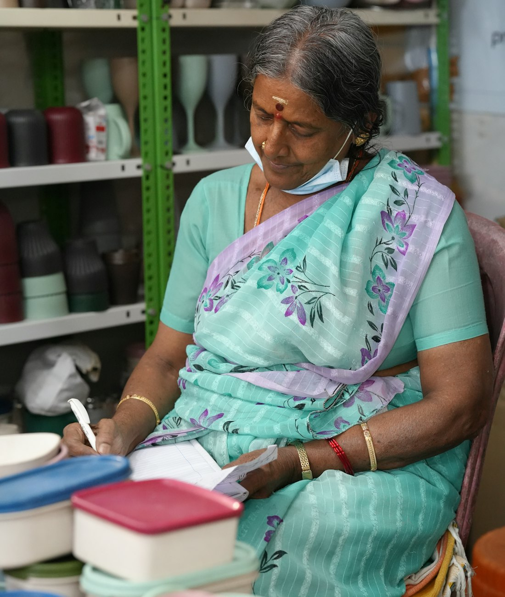
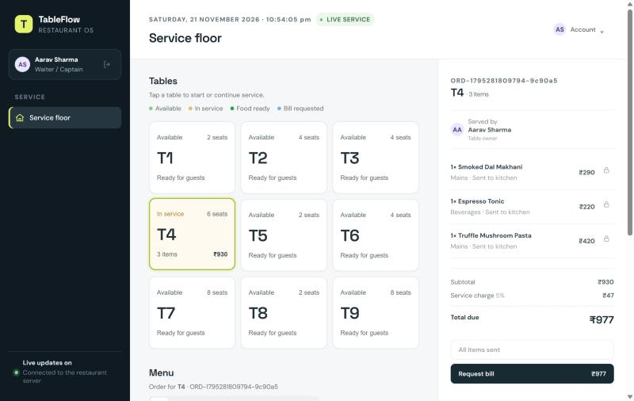
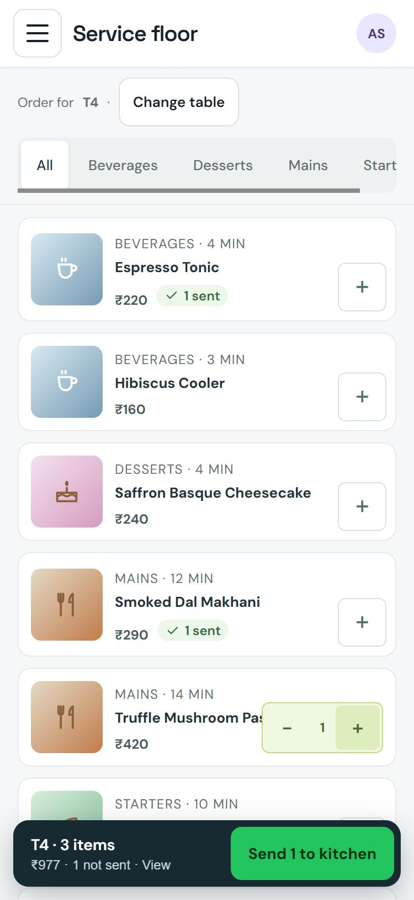
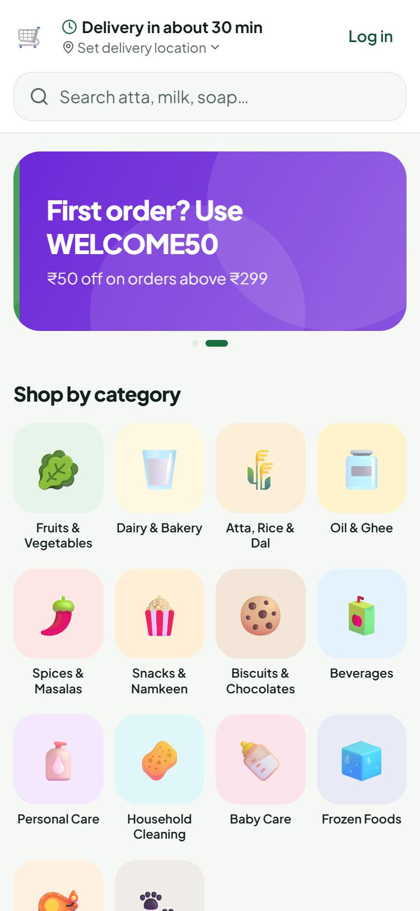

पुण्यातील व्यवसायांसाठी
Less paperwork. More business.
ForgeArc builds the websites, apps and software Pune businesses run on, so billing, stock, orders and customers live in one place instead of ten notebooks.
Reply within one business day · fixed quote once we understand the job

What changes
From notebooks to one system.
What actually changes when the paperwork moves into software built for your business.
Our products
Ready-made products you can see working today.
Built by ForgeArc and set up for your business. Book a 10-minute demo and see one running.


Restaurant POS · for restaurants & cafés
TableFlow POS
Table-service restaurants, cafés and bars that want orders, kitchen and billing on one system instead of paper KOTs.
See TableFlow POS →

Online store for kirana · for kirana & grocery stores
MohallaMart
Kirana stores, supermarkets and neighbourhood shops that already take WhatsApp or phone orders and want them in one tidy system.
See MohallaMart →Find your starting point
Every business gets stuck somewhere different.
Pick the one that sounds most like you. We shape the work around where you are, not around a fixed package.
Sound familiar?
- No professional website
- Hard to find online
- Billing done by hand
- Stock tracked on paper
- Customers drift away
What we’d build
A professional website, simple billing and inventory tools, and an online presence that matches the quality of your business.
Sound familiar?
- Several systems that don’t talk to each other
- Too much repetitive manual work
- Reports nobody trusts
- Growth exposes every gap
What we’d build
We connect fragmented tools into one system, automate the repetitive work, and give you reporting you can actually rely on.
Sound familiar?
- You need an MVP, fast
- The budget is tight
- Architecture has to scale later
- You need technical judgement, not just code
What we’d build
A lean, well-architected MVP built to validate fast, on infrastructure that won’t need a rebuild when traction arrives.
What we build
Six services, one accountable team.
From the first wireframe to the server it runs on, one studio and one point of contact.
Custom software
Web apps and internal tools that replace spreadsheets and manual, error-prone work.
Learn more →Web & mobile apps
Fast, SEO-ready websites and Android or iOS apps designed around your business, not a theme.
Learn more →AI integration
Chatbots, smart search and document automation, only where they save real time or money.
Learn more →
Digitalization
Move billing, stock and records off paper onto cloud systems, in phases that don't stop work.
Learn more →
E-commerce
Storefronts, payments and order handling built to sell, not just display products.
Learn more →UI/UX design
Interfaces designed around what your staff and customers actually do.
Learn more →How a project runs
Planned first. Built second. Supported after.
The planning step is the one most studios rush. Agreeing it in writing is how scope, cost and timelines stay honest.
Discovery
We learn your operations and goals before suggesting any technology.
Solution design
Architecture, screens and scope are planned and agreed in writing.
Build
Reviewable sprints, so you see working progress, not promises.
Launch
Tested, then deployed on infrastructure sized for your business.
Support
Maintenance and improvements as your business and its needs change.
Who we work with
Built for Pune businesses.
From clinics in Baner to manufacturers in Chakan and retailers across PCMC, we design around the way your business runs.
Now onboarding
Founding clients work with the founders.
ForgeArc is a new studio. Our first clients work directly with the people setting our standards, and help shape how we build.
1 project in discovery · 2 founding slots open
- Founder-level attentionYour project is shaped directly by the people setting our standards, not handed to a junior queue.
- Honest early pricingWe’re building our reputation on delivery, not markup, and early engagements are priced that way.
- First call on supportFounding clients get priority support and a direct say in how we build going forward.
Questions
Straight answers.
Still unsure? Ask us directly; we reply within one business day.
What does a project cost?
Websites start from ₹10K and custom web or mobile apps from ₹50K. Every quote is fixed once we understand what you actually need. See pricing.
How long does it take?
A website usually takes 1–2 weeks. A custom web or mobile app usually takes 6–8 weeks. Larger, multi-system work is scoped individually.
Do you only work with Pune businesses?
We’re based in Sanaswadi, Pune, and work with businesses both locally and remotely.
Can you work with the software we already use?
Yes. Connecting to the tools you already rely on is a normal part of our custom software work.
What happens after launch?
Every project includes a support window: 30 days for websites and 90 days for apps. Ongoing maintenance plans are available after that.
Have a problem, not a project brief?
Tell us what’s slowing your business down. We’ll tell you what technology can actually fix.